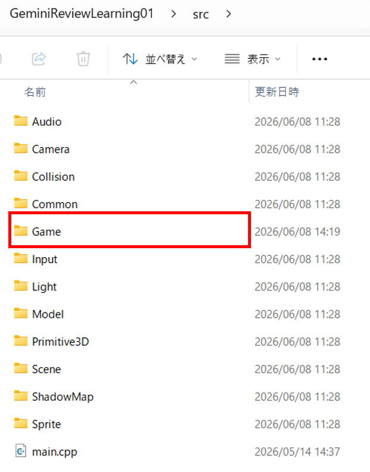
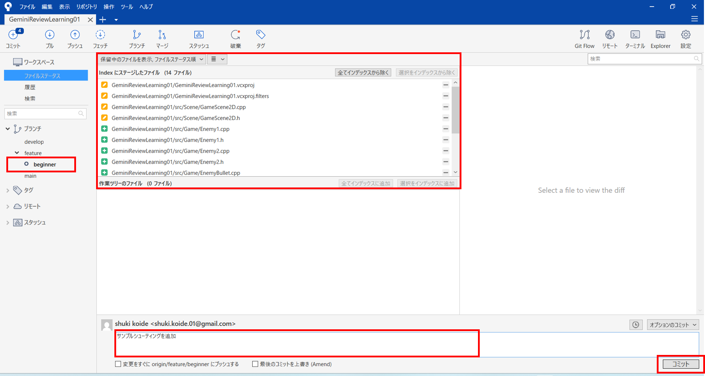

2
Game.zip を解凍して src の中に入れる
Game.zip を解凍し、出てきた Game フォルダをプロジェクトの src フォルダの中に入れます。
src/
└─ Game/
├─ Player.h
├─ Player.cpp
├─ Enemy1.h
├─ Enemy1.cpp
├─ Enemy2.h
├─ Enemy2.cpp
├─ PlayerBullet.h
├─ PlayerBullet.cpp
├─ EnemyBullet.h
└─ EnemyBullet.cpp

解凍した Game フォルダを、プロジェクトの src フォルダの中に入れます。
5
GameScene2D.h / cpp を上書きする
配布された GameScene2D.h と GameScene2D.cpp の内容で、既存の同名ファイルを上書きします。
この2つのファイルでは、src/Game に追加した Player、Enemy1、Enemy2、PlayerBullet、EnemyBullet を使ってゲームを動かします。
注意：上書き前に確認する既存の GameScene2D.h と GameScene2D.cpp に自分で変更を加えている場合は、上書き前にバックアップしておきましょう。
GameScene2D.h
#pragma once
#include "BaseScene.h"
#include "../Game/Enemy1.h"
#include "../Game/Enemy2.h"
#include "../Game/EnemyBullet.h"
#include "../Game/Player.h"
#include "../Game/PlayerBullet.h"
#include <array>
/**
* @brief ゲーム本編を表すシーンクラスです。
*/
class GameScene2D : public BaseScene
{
public:
/**
* @brief ゲームシーンを生成します。
* @param sceneManager シーン遷移を依頼する先のマネージャーです。
* @return なし。
*/
explicit GameScene2D( SceneManager* sceneManager );
/**
* @brief ゲームシーンを破棄します。
* @return なし。
*/
~GameScene2D() override;
/**
* @brief ゲームシーンの初期化を行います。
* @return なし。
*/
void Init() override;
/**
* @brief ゲームシーンの更新処理を行います。
* @return なし。
*/
void Update() override;
/**
* @brief ゲームシーンの描画処理を行います。
* @return なし。
*/
void Draw() override;
private:
Player player_;
Enemy1 enemy1_;
Enemy2 enemy2_;
std::array<PlayerBullet, maxBulletCount> playerBullets_;
std::array<EnemyBullet, 24> enemyBullets_;
int score_;
int enemy2HpMirror_;
};
GameScene2D.cpp
#include "GameScene2D.h"
#include "../Input/InputManager.h"
#include "SceneManager.h"
#include <DxLib.h>
static bool IsHit( float ax, float ay, int aw, float bx, float by, int bw )
{
return ax < bx + bw && ax + aw > bx && ay < by + bw && ay + aw > by;
}
GameScene2D::GameScene2D( SceneManager* sceneManager )
: BaseScene( sceneManager )
, score_( 0 )
, enemy2HpMirror_( 0 )
{
}
GameScene2D::~GameScene2D() = default;
void GameScene2D::Init()
{
score_ = 0;
enemy2HpMirror_ = 4;
player_.Init();
enemy1_.Init( 210.0f, 80.0f );
enemy2_.Init( 850.0f, 120.0f );
enemy2_.SetExternalHp( &enemy2HpMirror_ );
for (int i = 0; i < maxBulletCount; ++i)
{
playerBullets_[i].Deactivate();
}
for (int i = 0; i < static_cast<int>( enemyBullets_.size() ); ++i)
{
enemyBullets_[i].Deactivate();
enemyBullets_[i].SetTarget( player_.GetXAddress() );
}
}
void GameScene2D::Update()
{
player_.update( playerBullets_.data(), static_cast<int>( playerBullets_.size() ) );
enemy1_.update( enemyBullets_.data(), static_cast<int>( enemyBullets_.size() ) );
enemy2_.update( enemyBullets_.data(), static_cast<int>( enemyBullets_.size() ) );
for (int i = 0; i < static_cast<int>( playerBullets_.size() ); ++i)
{
playerBullets_[i].update();
}
for (int i = 0; i < static_cast<int>( enemyBullets_.size() ); ++i)
{
enemyBullets_[i].update();
}
for (int i = 0; i < static_cast<int>( playerBullets_.size() ); ++i)
{
if (!playerBullets_[i].IsActive())
{
continue;
}
if (enemy1_.IsAlive() && IsHit(
playerBullets_[i].GetX(),
playerBullets_[i].GetY(),
playerBullets_[i].GetSize(),
enemy1_.GetX(),
enemy1_.GetY(),
enemy1_.GetSize() ))
{
enemy1_.Damage( 1 );
playerBullets_[i].Deactivate();
score_ += 10;
}
if (enemy2_.IsAlive() && playerBullets_[i].IsActive() && IsHit(
playerBullets_[i].GetX(),
playerBullets_[i].GetY(),
playerBullets_[i].GetSize(),
enemy2_.GetX(),
enemy2_.GetY(),
enemy2_.GetSize() ))
{
enemy2_.Damage( 1 );
playerBullets_[i].Deactivate();
score_ += 20;
}
}
for (int i = 0; i < static_cast<int>( enemyBullets_.size() ); ++i)
{
if (enemyBullets_[i].IsActive() && player_.IsAlive() && IsHit(
enemyBullets_[i].GetX(),
enemyBullets_[i].GetY(),
enemyBullets_[i].GetSize(),
player_.GetX(),
player_.GetY(),
player_.GetSize() ))
{
player_.Damage( 1 );
enemyBullets_[i].Deactivate();
}
}
if (InputManager::GetInstance().IsKeyPressed( KEY_INPUT_RETURN ))
{
sceneManager_->ChangeScene( SceneID::Result );
}
}
void GameScene2D::Draw()
{
DrawString( 10, 10, "Arrow keys: move Space/Z: shot Enter: result", GetColor( 255, 255, 255 ) );
DrawFormatString( 10, 58, GetColor( 255, 255, 255 ), "Score: %d", score_ );
enemy1_.draw();
enemy2_.draw();
for (int i = 0; i < static_cast<int>( playerBullets_.size() ); ++i)
{
playerBullets_[i].draw();
}
for (int i = 0; i < static_cast<int>( enemyBullets_.size() ); ++i)
{
enemyBullets_[i].draw();
}
player_.draw();
if (!player_.IsAlive())
{
DrawString( 560, 350, "PLAYER DOWN", GetColor( 255, 64, 64 ) );
}
}
7
サンプルシューティングをコミットしてpushする
シューティングゲームが動作したら、追加・変更したファイルをコミットし、feature/beginner ブランチをGitHubへpushします。
このコミットが、次のSTEPでPull Requestを作るための元になります。
コミットメッセージ例Add sample shooting game for beginner review
補足： この時点では、AIレビュー用のPull Requestはまだ作成しません。
まずは feature/beginner ブランチに変更をpushできていることを確認します。

変更したファイルをコミットし、feature/beginner ブランチをGitHubへpushします。